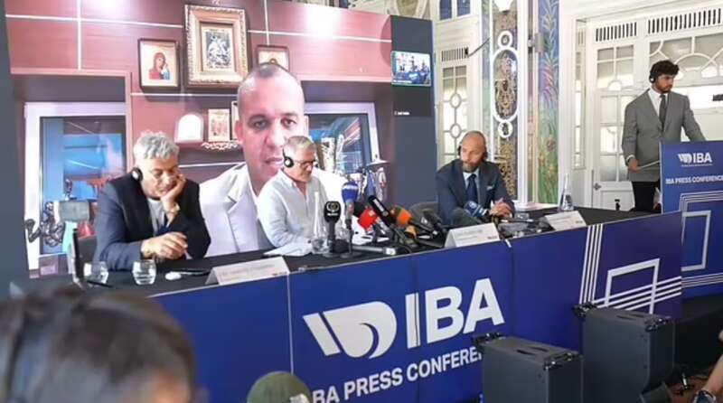

阿尔及利亚拳击手哈利夫和中国台北队拳击手林郁婷遭国际拳击协会（IBA）以“性别检测未通过”为由封杀。在今年巴黎奥运会上，两名拳击手被允许参赛，引发巨大争议。国际拳击协会与国际奥委会在性别标准上数次交锋，国际拳击协会于周一（8月5日）在巴黎召开新闻发布会，首席执行官克里斯·罗伯茨表示，染色体检测结果表明，两名拳击手均不符合参赛资格。但组织不佳的发布会和IBA官员矛盾的说法并未澄清问题，反而徒增混乱。
全程混乱的发布会
据《每日邮报》报道，持续了近两小时的发布会混乱不堪：会议开始时间推迟了大约一小时。翻译设备无法正常工作。现场传来三声巨响，人们怀疑自己是不是遭遇了恐怖袭击，但后来发现是麦克风受到严重干扰。
会议进行到一半时，一群阿尔及利亚人展开一面旗帜以示抗议，并开始高呼口号。
由于厕所被堵住了，而且没有空调，所以没人能去厕所。两个小时的会议演变成一场骂战，观众席里摆满了植物，而通过视频连线出席的国际拳协主席克里姆列夫在前两次被要求发表评论时似乎都保持了沉默。

周一，国际拳击协会在巴黎举行发布会
国际拳协主席和首席执行官说法不一
据《卫报》和路透社报道，国际拳协主席克里姆列夫在莫斯科通过视频方式出席了发布会，然而其冗长、漫无边际的发言掩盖了发布会的气氛。
他批评奥运会开幕式“对全世界的基督徒和穆斯林来说都是一件可怕的事情”，出言侮辱国际奥委会主席托马斯·巴赫是“鸡奸者”，并称医生测试后发现两名拳击手体内的“睾酮水平与男性相同”。
然而，国际拳协的医生伊奥尼斯·菲利帕托斯和首席执行官克里斯·罗伯茨后来表示，这些运动员接受的是染色体测试，而不是睾酮测试。
罗伯茨告诉记者：“染色体测试结果表明两名拳击手均不符合参赛资格。”
罗伯茨表示，哈利夫和林郁婷已经接受过两次血液检测。第一次是在2022年5月，伊斯坦布尔的一家实验室发现了“不一致之处”。八个月后，在世界锦标赛上又进行了一次检测，当时国际拳击协会宣布这两位拳手没有资格参加女子比赛。
菲利帕托斯医生拒绝对这两位拳击手的实际性别发表评论。他说：“哈利夫出生时，我不在阿尔及利亚的产房里……但实验室表明，血液测试结果显示这名拳击手是男性。”
罗伯茨称，由于阿尔及利亚等协会的要求，他无法透露更多有关检测结果的信息。他表示，检测结果已于去6月提交给国际奥委会，但奥委会并未采取任何行动。
国际奥委会则表示，国际拳协是一个信誉不佳的组织，深陷财务不透明的泥潭，并因与俄罗斯领导人的关系而受到损害。
国际奥委会主席托马斯·巴赫此前表态：“我们有两位拳击手，她们出生为女性，被当作女性抚养，持有女性护照，并以女性身份参加比赛多年，这就是女性的明确定义。”
哈利夫要求IBA停止“霸凌”
哈利夫在周二（8月6日）表示，她希望过去一周所承受的痛苦能够让她获得一枚金牌。
哈利夫说：“我向全世界人民发出信息，要求他们遵守奥林匹克原则和奥林匹克宪章，不要欺负任何运动员，因为这会产生巨大的影响……这会摧毁人类，会扼杀人的思想、精神和心灵，造成分裂。因此，我要求他们不要继续霸凌（ refrain from bullying）。”